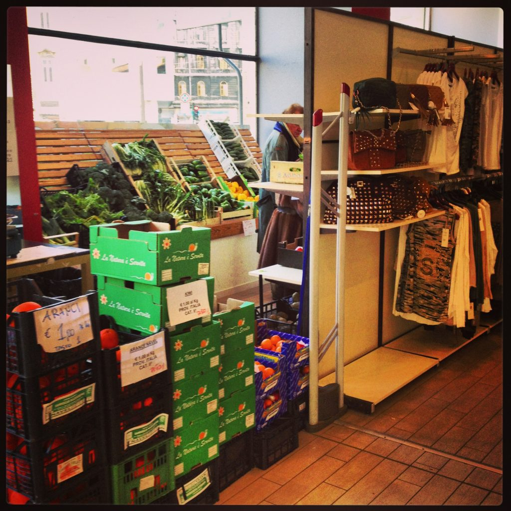

"Hybrid" Italian store
Unlike in the States, in Italy you cannot use your debit card to get cash back at a store. Credit card payments are becoming more and more popular, but you should always have enough cash with you to do your shopping, just in case they don’t accept debit or credit cards. A good rule of thumb is to ask whether or not they accept your card before you shop. {This is an excerpt from chapter 5 “Stores” of the eBook “Italy from the Inside. A native Italian reveals the secrets of traveling in Italy”. Buy our eBook on Amazon and leave us a review! If it’s good, you’ll make us happy, if it’s bad, you’ll make us improve. Thank you either way!}